| 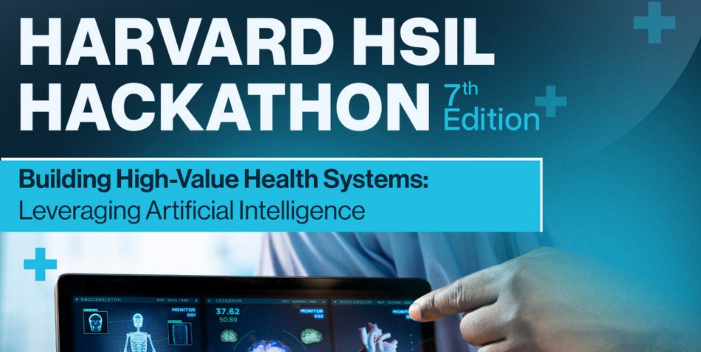 | Newsletter · Bangladesh Hub · IRIIC, UIU Two seasons of AI for health in Dhaka. Season 3 is next.Since 2025, the Institute of Research, Innovation, Incubation and Commercialization (IRIIC) at United International University has hosted the only Bangladesh hub of the Harvard Health Systems Innovation Lab (HSIL) Hackathon, led by the Harvard T.H. Chan School of Public Health. Here is what two seasons built, and how your organisation can be part of the third. | Harvard HSIL Hackathon 2026 · 10–11 April Season 2 at a glanceThe 7th edition ran in parallel across 50+ hubs worldwide on the theme Building High-Value Health Systems: Leveraging Artificial Intelligence. The Dhaka hub was supported by a Special Grant from the ICT Division, Government of the People’s Republic of Bangladesh. 650+ applications from across Bangladesh | 98 innovators selected: 22 teams and 4 individuals | 23 universities, medical colleges and research institutions | 22 mentors from health, academia, finance and tech |
| Advancing to the HSIL Global Bootcamp Meet the 2026 Dhaka champions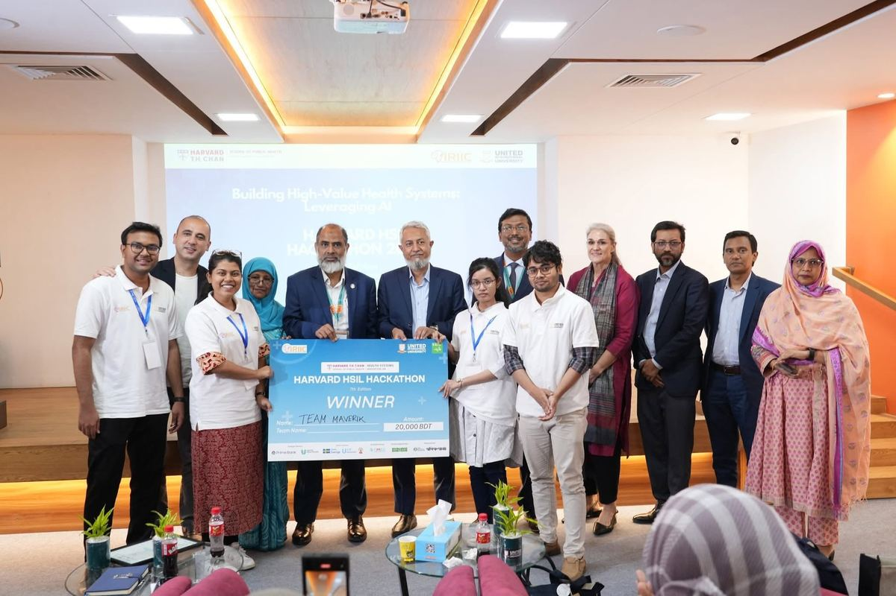 Team Maverick MIST & UIU An AI-enabled platform for early detection and support of dyslexia in children, combining personalised interactive learning, performance analytics and guided interventions. | 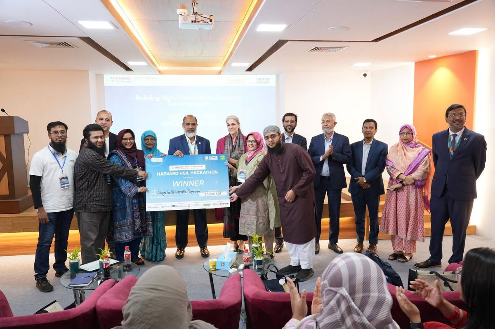 ShigellaAI Diagnostics Bangladesh icddr,b A clinical decision-support tool that uses routine patient data to give real-time risk scores for Shigella-related diarrhoeal disease in resource-constrained settings. |
| Season 2 in pictures Two days at the Dhaka HubDay 1 opened with a welcome from Prof. Rifat Atun, Director of HSIL, before Prof. Khondaker A. Mamun, Director of IRIIC, started the hackathon. On Day 2, teams attended a CPR seminar hosted by strategic partner United Healthcare Services Ltd, then pitched to a seven-member jury. 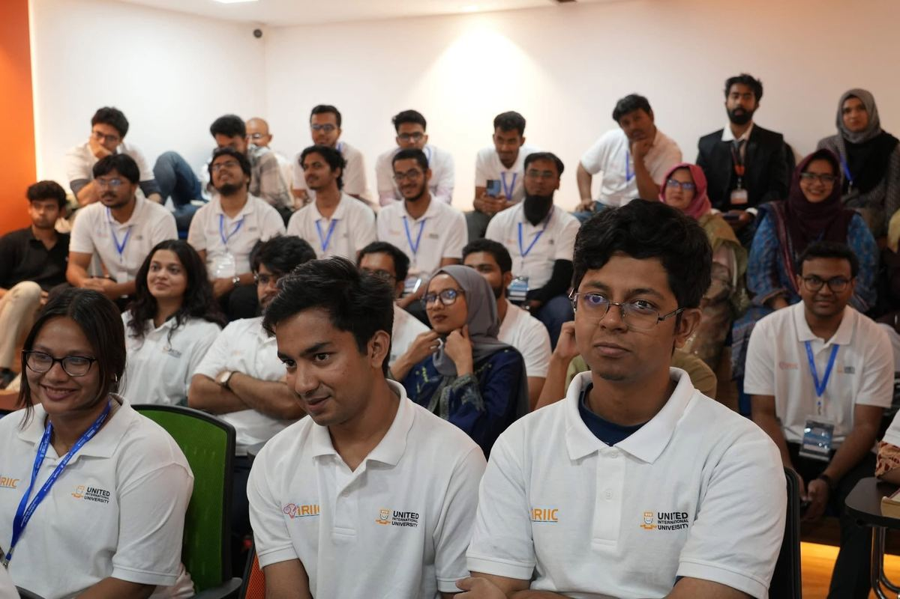 98 innovators from 23 institutions at IRIIC, UIU. 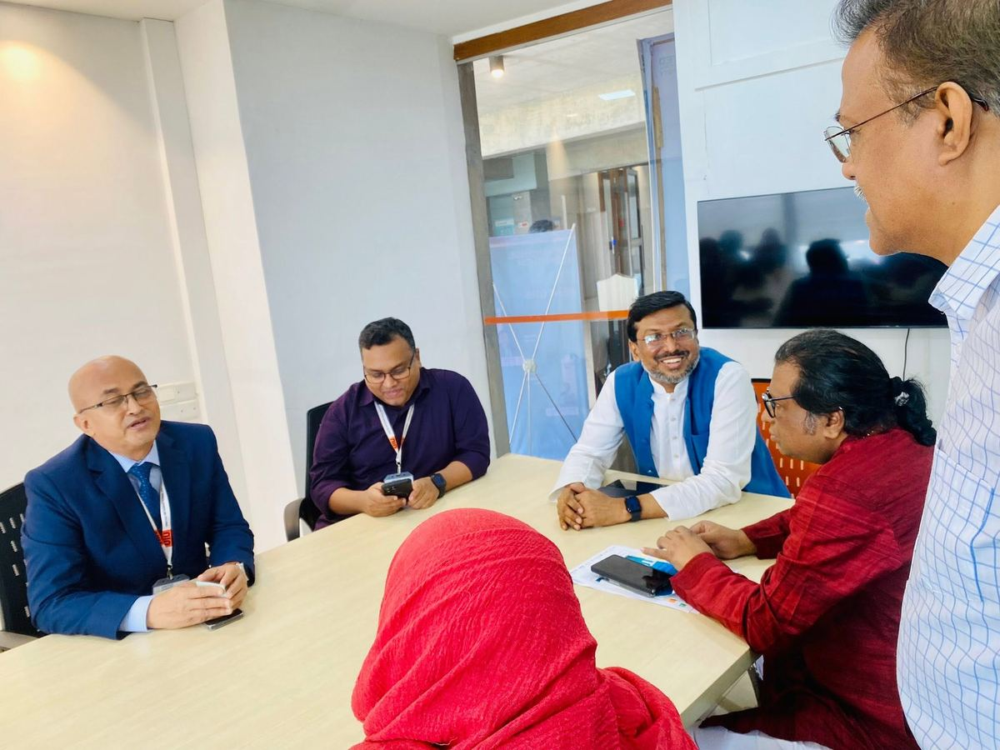 Mentors sharpening problem framing, models and pitches. | 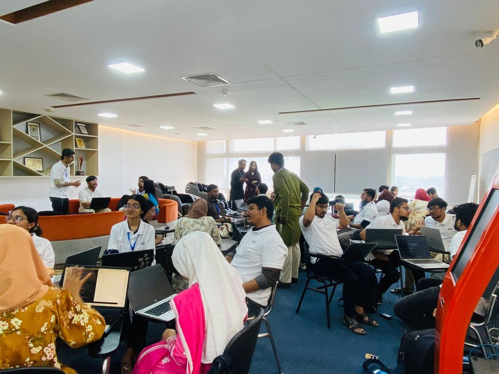 Teams building AI solutions for critical care, diagnostics and maternal health. |
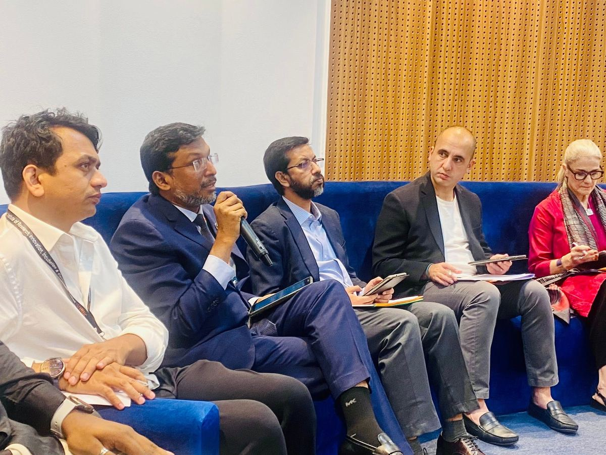 Jury and guests during the final pitches. | 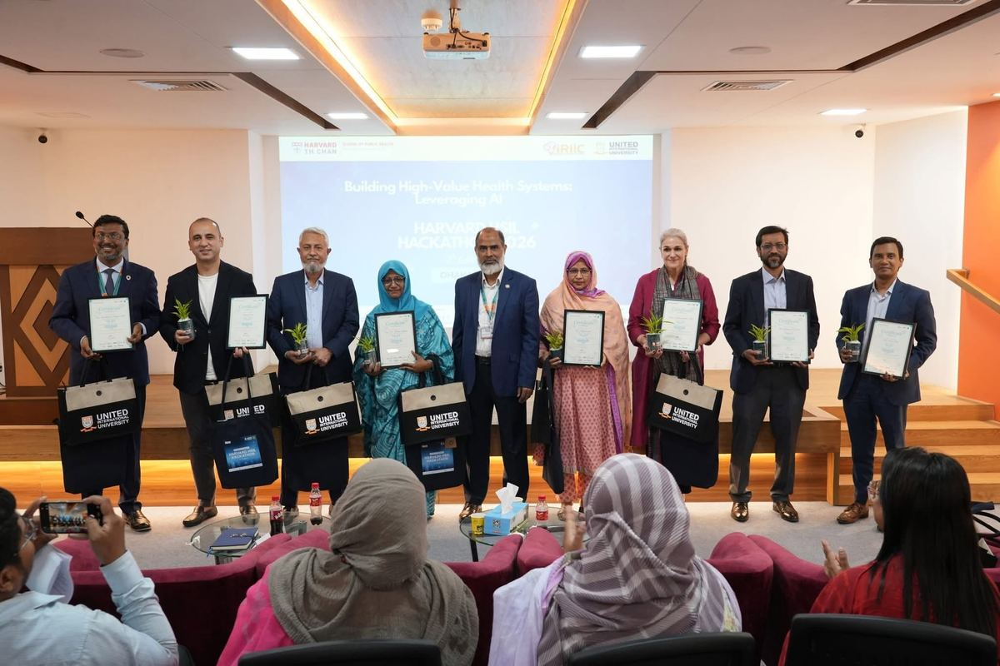 Jury members and guests at the closing ceremony. |
| The first-ever Bangladesh hub Where it started: Season 1, 2025In April 2025, IRIIC became the first regional hub of the Harvard HSIL Hackathon in Bangladesh, as part of a 6th edition that brought together more than 3,000 participants from 19 countries. The jury included representatives of ADB, DGHS, Evercare Hospital and the Embassy of Sweden. 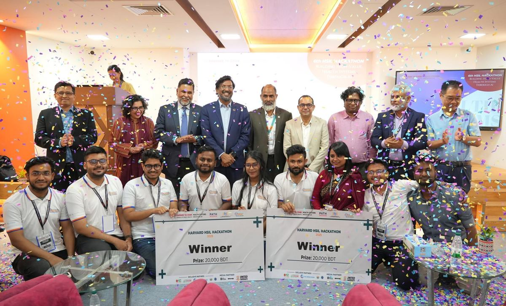 Season 1 champions with guests and jury, April 2025. | Team NURIX: brain-computer interface technology to address mental health issues. | | Team SMARTENDO: an AI-driven, personalised care model for women living with endometriosis. |
Both champion teams earned a place in the Harvard HSIL Venture Incubation Program. 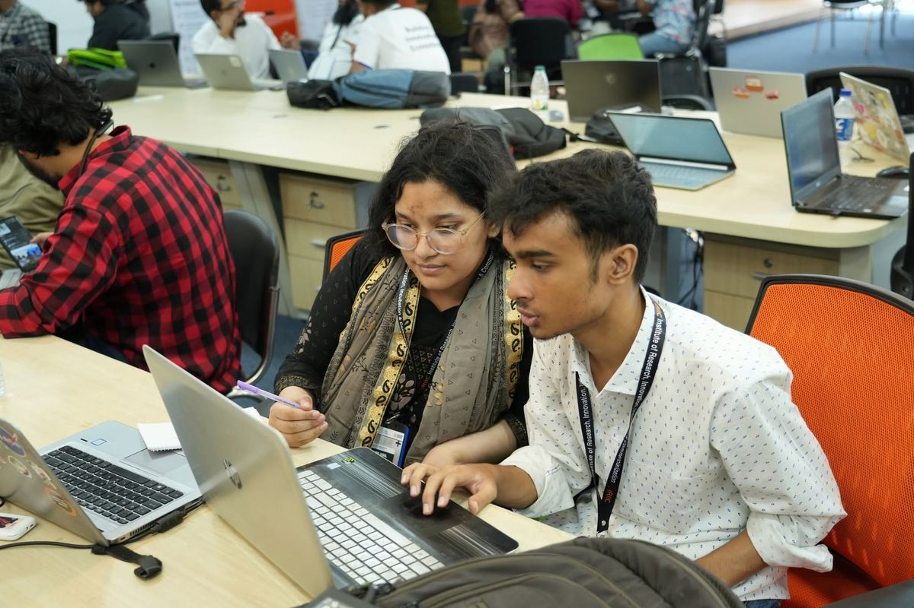 Season 1 teams at work. | 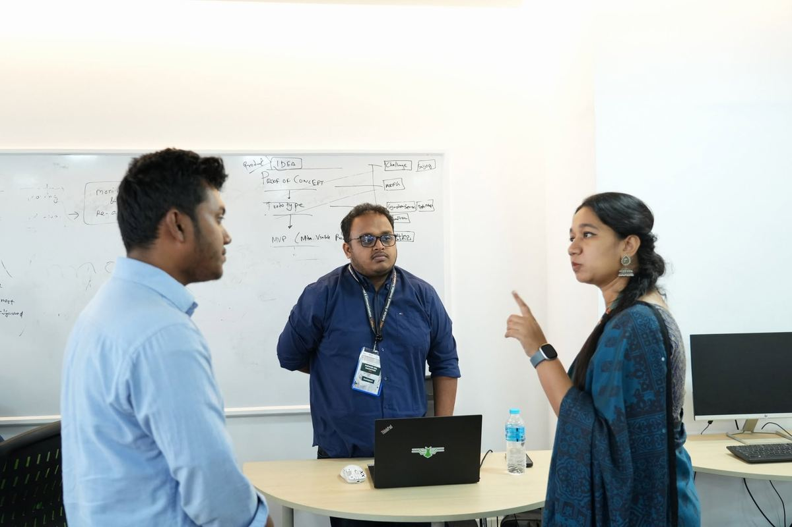 Mentoring at the first Bangladesh hub. |
| For sponsors and partners Why partner with the Bangladesh Hub | A global stage. Your brand alongside Harvard T.H. Chan School of Public Health and a hackathon running across 50+ hubs worldwide. | | Bangladesh’s best young health innovators. 650+ applicants in 2026 from universities, medical colleges and research institutions such as BUET, icddr,b, BRAC University, IUT and MIST. | | Government-backed. Season 2 was supported by a Special Grant from the ICT Division, and the jury included DGHS and Startup Bangladesh. | | Real visibility. Coverage in The Business Standard, Daily Bonik Barta, Bangladesh Post and The Daily Campus, plus a feature on Jamuna TV. | | Impact you can point to. Champion teams advance to Harvard’s global bootcamp and venture programme, building AI solutions for Bangladesh’s health system. |
| Harvard HSIL Hackathon 2027 · 16–17 April 2027 Partnership opportunities for Season 3We are inviting organisations to join the third season of the Bangladesh hub. Packages are tailored to each partner and can include: | Strategic Partner: headline recognition across the event, media and the hub report, with a seat on the jury or a keynote slot. | | Challenge or Track Partner: set a health challenge in your sector (for example SRHR or AI in health) and meet the teams that solve it. | | Prize and Incubation Partner: fund champion prizes or post-hackathon support for winning teams. | | Media and Hospitality Partners: reach participants, mentors and guests through coverage, on-site presence and refreshments. |
To discuss a partnership, reply to this email or contact: Sadik-E-Tawheed Project Coordinator, IRIIC, United International University |
| With thanks to our Season 2 partners Grant support: ICT Division, Government of the People’s Republic of Bangladesh (Special Grant, FY 2025–26) | Institute of Research, Innovation, Incubation and Commercialization (IRIIC) You are receiving this newsletter because your organisation works in health, technology or innovation in Bangladesh. If you would prefer not to hear from us, reply with “unsubscribe”. |
|